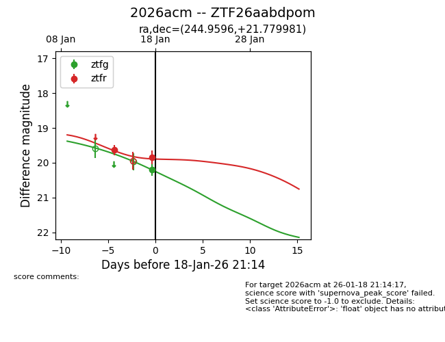
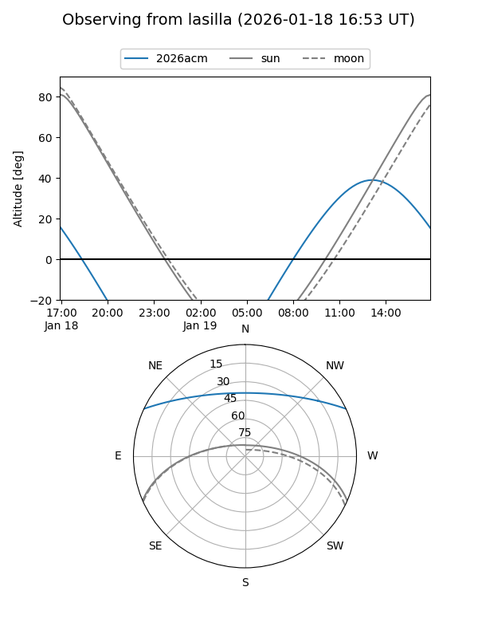
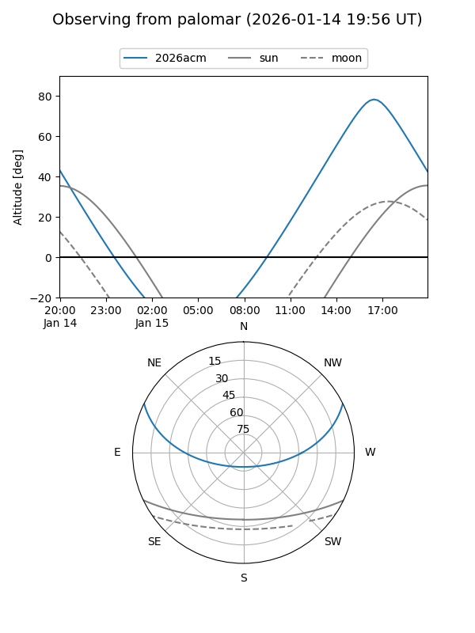
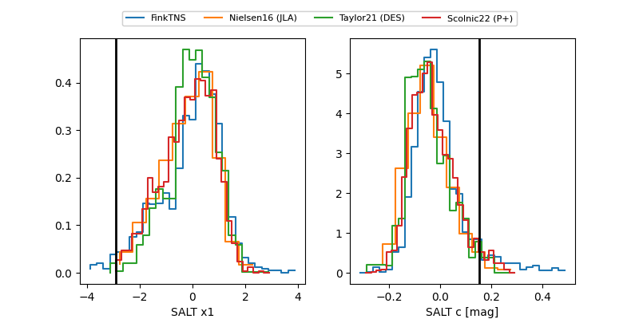

2026acm
Target 2026acm at 2026-01-16 15:10
Aliases and brokers:
FINK: link
Lasair: link
ALeRCE: link
TNS: link
YSE: link
alt names
ZTF26aabdpom (ztf,fink_ztf)
2026acm (tns,yse)
Coordinates:
equatorial (ra, dec) = 244.9596,+21.77998
equatorial (HMS+DMS) = 16:19:50.30,+21:46:47.93
galactic (l, b) = (38.3978,+42.59944)
Flags:
Photometry:
last ztfr=19.64
1 ztfr detections
Lightcurve

Visibility


Additional plots
